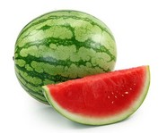

|  | Watermelon (Citrullus lanatus) is a plant species in the family Cucurbitaceae, a vine-like flowering plant originally domesticated in West Africa. It is a highly cultivated fruit worldwide, having more than 1000 varieties. Watermelon is a scrambling and trailing vine in the flowering plant family Cucurbitaceae. There is evidence from seeds in Pharaoh tombs of watermelon cultivation in Ancient Egypt. Watermelon is grown in favorable climates from tropical to temperate regions worldwide for its large edible fruit, which is a berry with a hard rind and no internal divisions, and is botanically called a pepo. The sweet, juicy flesh is usually deep red to pink, with many black seeds, although seedless varieties exist. The fruit can be eaten raw or pickled, and the rind is edible after cooking. It is commonly consumed as a juice or as an ingredient in mixed beverages. Considerable breeding effort has developed disease-resistant varieties. Many cultivars are available that produce mature fruit within 100 days of planting. In 2017, China produced about two-thirds of the world total of watermelons. |